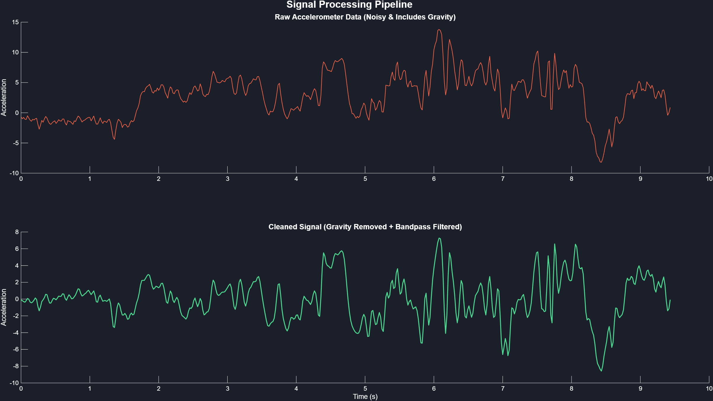
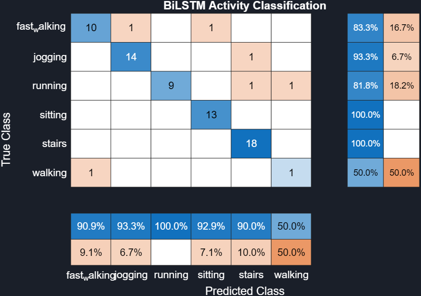
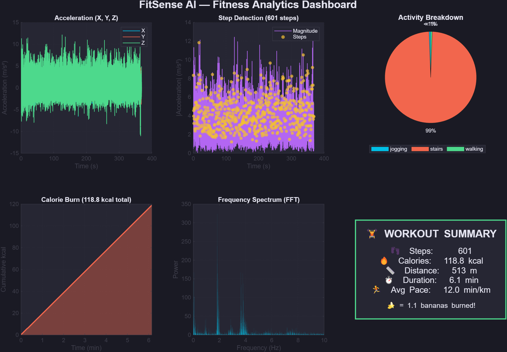
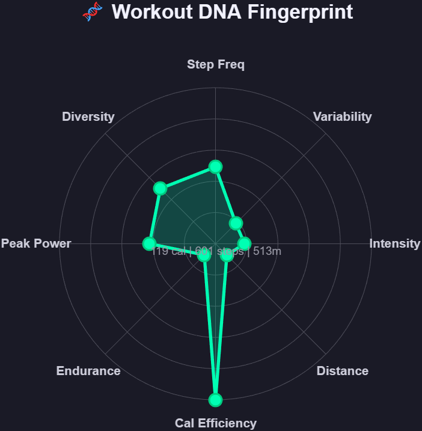

Your Phone is Your Personal Trainer
NighQuest | May 2026
Smartphones have accelerometers, gyroscopes, and GPS — the same sensors used by expensive wearables. We built an AI-powered system that turns your phone into a professional fitness tracker using MATLAB.
Accelerometer + Gyroscope + GPS captured via MATLAB Mobile
Deep Learning LSTM identifies what activity you're doing in real-time
Steps, calories, distance, and a unique "Workout DNA" fingerprint
Raw accelerometer data is noisy and contains gravity. Our preprocessing pipeline:


We trained 5 models to compare deep learning against traditional approaches:
94.4%
88.7%
38.0%
94.4%
95.77%
★ Advanced AIThe comparison demonstrates mastery of multiple ML paradigms. The Bidirectional LSTM (BiLSTM) outperformed the classic ML models, proving its ability to capture complex temporal sequence dynamics.
Interactive GUI with dark theme, tabbed views, real-time results, and user profile input.

A unique polar radar chart that creates a visual "fingerprint" for each workout based on 8 metrics.

Watch the FitSense AI app in action, processing real-time sensor data and displaying analytics.
That's equivalent to...
🍌 1.1 bananas 🍕 0.4 pizza slices
Anyone with a smartphone can now have a professional fitness tracker
Built with MATLAB Online • MATLAB Mobile • Deep Learning Toolbox • App Designer